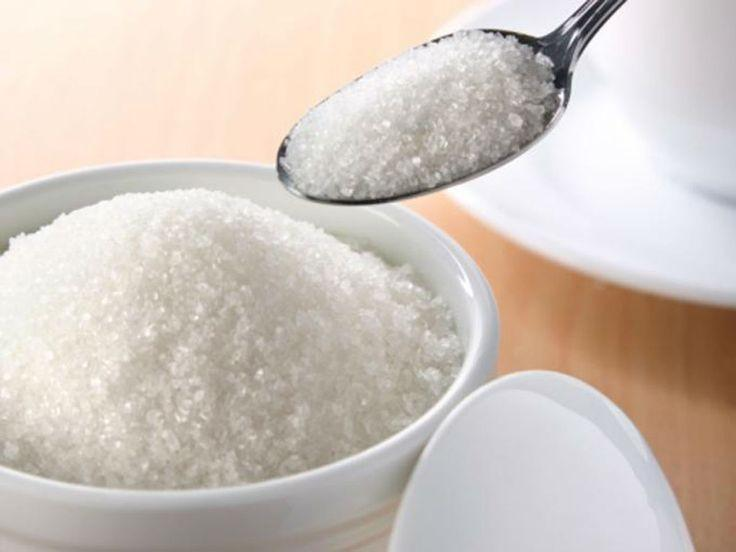

Las personas cada vez más ven las consecuencias de una vida no saludable y eso los lleva a preguntarse ¿cómo es una vida saludable? Una vida saludable significa reducir al mínimo la presencia de factores de riesgos en nuestra vida, los cuales nos afectan negativamente, una vida saludable se centra principalmente en 3 cosas, alimentación, Actividad física, y sus hábitos. Es necesario mantenernos más sanos y así poder prevenir los buenos hábitos en nuestra vida diaria la cual ayudará a prevenir enfermedades.
Algunos tips para empezar a una vida saludable son:
-Dieta equilibrada
Una alimentación saludable se rige por incluir todos los alimentos contemplados en la pirámide nutricional, pero en las proporciones adecuadas y en la cantidad suficiente (no más) para mantener las necesidades nutricionales del organismo en función del consumo energético que éste realiza con la actividad diaria.
-Elegir qué alimentos consumir
Esto es lo principal para tener una vida saludable ya que debemos saber llevar una buena alimentación en nuestra vida diaria como frutas ,verduras ,legumbres ,lentejas ,frijoles, nueces, granos integrales entre otros alimentos que te ayudarán a tener una vida saludable
-Basa tu alimentación en los alimentos de origen vegetal
Las frutas y verduras, cereales, tubérculos, legumbres, setas y demás vegetales forman parte de la dieta mediterránea y, por tanto, deben formar parte en una alimentación equilibrada.
-No exceder el consumo de azúcar Si bien su sabor dulce es de un gran atractivo para los niños, la OMS recomienda balancear su consumo y no excederte del 10 % de las calorías diarias. Este es un tema importante que se debe considerar para empezar a tener una alimentación balanceada.
- Nunca saltarse el desayuno
Por algo es considerado el desayuno la comida más importante del día, es el primer consumo de energía que tiene el cuerpo luego de un largo periodo de reposo como lo es la jornada de sueño, además, precede el momento del día que conlleva por lo general mayor consumo calórico. Un desayuno óptimo puede incluir:
-Lácteos: leche, alimentos lácteos o yogurt.
-Cereales y panes integrales
-Frutas
-Huevo
-Hidrátate
Beber agua suficiente para mantenerte hidratado es fundamental para llevar una vida sana. Bebe agua en todas las comidas y entrehoras, cuando tengas sed. Una persona adulta sana con una actividad física ligera, no necesita beber agua sin tener sed. Pero en el caso de niños y personas mayores, hay que poner especial atención en este punto.
- Ejercicio físico
El ejercicio es primordial para mantener una buena salud y un peso saludable. Practicar alguna actividad física a diario puede ayudar a controlar el peso, reducir el riesgo de enfermedades crónicas y mejorar el estado de ánimo.
-Práctica entre 30 y 60 minutos diarios de ejercicio físico moderado
El ejercicio físico nunca falta en los consejos generales sobre cómo llevar una vida sana. Es tan fundamental como la alimentación. La actividad física habitual reduce el riesgo de enfermedades crónicas y se asocia a un mayor bienestar general. Andar, realizar las tareas del hogar, subir escaleras son también formas de ejercicio que complementan actividades físicas más intensas como correr, nadar o ir en bicicleta.
-No estés más de 2 horas en el sofá ante el televisor
Este consejo se hace extrapolable a cualquier actividad sedentaria. El sedentarismo es uno de los grandes enemigos de un estilo de vida saludable.
-Practica ejercicios de meditación, relajación y estiramientos
Este tipo de actividad física de baja intensidad, combinada con el ejercicio moderado, también contribuye al equilibrio emocional, al descanso adecuado y, en definitiva, a llevar una vida sana.
-DUERME LAS HORAS SUFICIENTES
Dormir bien ayuda a tener un estilo de vida saludable ya que, durante el sueño, liberamos hormonas que ayudan a combatir enfermedades. Al dormir, el cuerpo se relaja, y nos ayuda con el estrés, la ansiedad y la depresión.
-Estar de buen humor
Llenar tu vida de momentos felices y una vida social activa va a generar una sensación de salud mental inmediata. Mantener una actitud positiva y de buen humor te ayudará a reducir el estrés, la ansiedad.
-Toma una actitud positiva y disfruta de las cosas que te gustan
La actitud es básica para mejorar tu calidad de vida y tu salud. Aprende a desarrollar tus fortalezas e incrementa el afecto positivo. Así controlarás el estrés y mejorará tu bienestar.